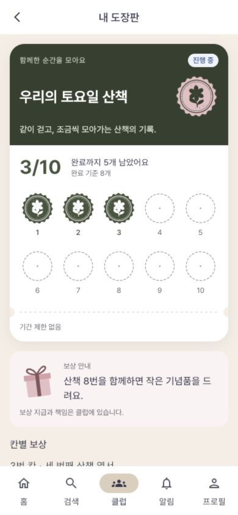
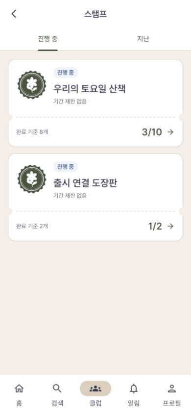

클럽 스탬프 — 운영진이 함께 찍는 도장판
클럽이 정한 활동을 운영진이 확인하고 회원 카드에 수동으로 도장을 찍는다. 회원은 내 진행 상황과 칸별 보상 안내·지급 표시·이력을 본다. 마일리지와는 독립된 기능이며 자동 적립이나 현금 지급으로 연결하지 않는다.
현재 범위와 확인 수준
2026-11-22 소스 기준으로 클럽장이 도장판 만들기를 허용하고 현재 운영진이 공동 운영한다. 설정 행이 없으면 만들기는 꺼져 있다. 만들기 중지는 기존 판의 열람·찍기·정정·보상 표시를 일괄 중지하는 설정이 아니다. 공개 API와 관리자 서버의 기본 출시 목록에는 CLUB_STAMP가 포함되어 있지만 환경 변수 변경과 실제 배포 상태는 별도 확인 대상이다.
이번 갱신은 서버 계약과 앱 동작의 소스 대조다. 과거 로컬 앱 검사와 캡처는 아래에 보존하며 새 실행 결과로 합산하지 않는다. 서명 앱·실제 알림 수신·다중 서버·운영 배포 완료를 이 문서만으로 선언하지 않는다. 현재 출시 판단은 클럽 스탬프의 공개 준비와 함께 확인한다.
누가 무엇을 할 수 있는가
| 사람 | 가능한 행동 | 현재 권한 경계 |
|---|---|---|
| 클럽장 | 만들기 설정을 켜고 끄며 판과 회원 카드를 운영 | 실제 클럽 소유자와 현재 회원 역할을 대조. 다른 발행자가 잠근 판을 임의 변경하지 못함 |
| 현재 운영진 | 판 생성·열람·수정·종료·찍기·취소·보상 표시 | STAMP_ISSUER는 운영진에게 자동 부여하며 별도 위임 항목이 아님. 역할 제한 중에는 유효 권한이 없음 |
| 발행자 | 나만 변경 가능 잠금의 설정·해제 | 잠긴 판의 변경은 현재 운영 자격을 가진 발행자만 가능. 다른 운영진은 읽기 가능 |
| 이관하는 운영진 | 새 담당자를 현재 발급 자격자로 변경 | 공동 운영 판은 변경 권한자가 이관. 잠긴 판은 발행자 본인 또는 기존 발행자가 자격을 잃은 경우의 현재 운영진. 버전을 대조하고 잠금 상태는 유지 |
| 현재 회원 | 진행·지난 목록, 내 카드와 내 이력 열람 | 다른 회원 카드 조회와 운영 변경은 불가. 조회만으로 카드를 발급하지 않음 |
| 플랫폼 운영자 | 기존 클럽·회원 권한 지원 | 이 API의 admin 경로는 클럽 운영 기능이다. 전용 플랫폼 스탬프 대행 화면을 뜻하지 않음 |
카드 보유자가 클럽을 나가도 운영진은 기존 카드·이력을 정정할 수 있다. 새 도장은 현재 클럽 회원이면서 활동 가능한 계정에만 찍는다. 일반 회원으로 남은 전 운영진은 자기 카드 열람과 운영 변경 권한을 구분한다. 역할 제한이 적용되는 권한도 같은 기준을 따른다.
도장판을 만들고 운영하는 흐름
- 이름, 1–50칸, 1개 이상 칸 수 이하의 완료 기준, 찍는 방식과 보상 설명을 정한다. 이름은 40자, 설명은 1,000자, 전체 보상 안내는 200자 이내다.
- 순서대로 찍기는 가장 앞의 빈 칸을 채운다. 칸 선택 방식은 전체 칸에 중복 없는 이름을 붙이고 대상 칸을 지정한다. 칸 이름은 20자 이내이며 이름 없이 칸 선택 방식을 사용할 수 없다.
- 시작일·종료일은 선택 사항이다. 한국 날짜로 시작일 0시부터 종료일 당일까지 찍을 수 있다. 시작 전도 진행 목록과 생성 한도 계산에 포함한다. 새 판을 만들 때는 클럽의 진행 판이 30개 미만이어야 한다. 기한이 지난 ACTIVE 판은 지난 목록에 보이며 CLOSED 상태로 자동 변경된다는 뜻은 아니다.
- 첫 도장을 찍을 때 회원 카드가 생긴다. 한 명에게 찍거나 중복 없는 1–100명을 한 요청으로 지정한다. 일괄 처리에서 한 사람이라도 회원 자격·칸·기간 조건을 충족하지 못하면 도장·이력·발송 의도·확인증을 함께 되돌린다.
- 완료 기준에 도달하면 COMPLETED가 된다. 완료 기준이 전체 칸보다 작으면 완료 뒤 남은 칸에도 찍을 수 있다. 도장 취소로 기준 미만이 되면 IN_PROGRESS로 돌아가고 완료 시각을 비운다.
- 운영을 마치면 판을 종료한다. CLOSED 판은 새 도장과 일반 수정을 막고 다시 여는 API는 없다. 취소·보상 표시·담당자 이관은 각각의 현재 권한 아래 계속 처리한다.
카드가 하나라도 생긴 뒤에는 칸 수·칸 이름·찍는 방식·완료 기준의 실제 변경을 거절한다. 같은 구조를 다시 보내는 것은 구조 변경이 아니다. 제목·안내·이미지·기간·칸별 보상 설명은 ACTIVE 판에서 버전을 대조해 수정한다. 기한만 지난 ACTIVE 판은 종료일 연장으로 다시 진행 대상이 될 수 있으므로 명시적 종료와 구분한다. 구조 고정에 관한 설명 요청을 정책 승인으로 간주하지 않는다.
보상과 정정의 책임
보상 지급과 책임은 클럽에 있다. 시스템은 안내와 지급 여부를 기록하며 현금·마일리지를 자동 지급하거나 지급을 보증하지 않는다.
| 행동 | 조건과 결과 |
|---|---|
| 전체 카드 보상 표시 | 카드 완료 필요. 표시와 해제는 별도 기록이며 같은 상태 재요청은 새 이력을 추가하지 않음 |
| 칸별 보상 표시 | 해당 칸에 도장이 있으면 가능. 전체 완료나 최소 도장 수를 추가 요구하지 않음 |
| 도장 취소 | 카드 전체 보상과 그 칸의 보상 표시를 먼저 해제. 다른 칸의 보상 표시를 모두 해제할 필요는 없음 |
| 오래된 화면에서 칸 변경 | 취소와 칸별 보상은 현재 markId를 대조. 취소 뒤 새로 찍힌 같은 칸의 도장을 오래된 요청으로 변경하지 않음 |
| 종료·만료·회원 탈퇴 뒤 정정 | 새 도장과 구분. 기존 카드에 대한 취소·보상 표시를 현재 운영 권한과 발행자 잠금 아래 처리 |
응답 유실과 앱 복귀
생성·찍기·일괄 찍기·취소·보상 표시에는 요청 번호가 필요하다. 서버는 행위자와 요청 번호로 확인증을 보관하고 메서드·경로·내용의 지문을 대조한다. 같은 번호에 다른 내용을 보내면 충돌이다. 수정·이관은 버전 대조 방식이며 이 확인증 복구 계약과 같지 않다.
앱은 보내기 전에 계정별 기기 저장소에 원래 요청 번호·내용·대상을 보관한다. 보관 실패면 보내지 않는다. 일괄 처리 결과가 불확실한 동안 같은 판에 새 단건 또는 일괄 요청을 준비하지 않으며, 기존 요청을 조회하거나 같은 내용으로 재전송한다. 확인증 조회의 404는 실패 확정이 아니다. 권한 회수로 조회가 거절되면 운영진에게 실제 반영 결과를 확인해야 한다. 불확실한 결과를 성공이나 자동 취소로 표시하지 않는다.
운영 화면은 회원 선택·확인창을 거친 뒤 계정 세션과 현재 읽어 온 권한을 다시 확인하고 서버에서도 권한을 검사한다. 카드 변경 뒤 상세·카드 목록·이력을 재조회한다. 도장판 수정의 버전 충돌은 입력을 남기고 최신 값을 가져와 비교하게 한다. 서버 반영 성공과 후속 조회 성공은 별개다.
회원 목록은 진행 중·지난 탭과 더 보기를 제공하고 카드 상세는 진행·전체/칸별 보상·내 이력을 보여준다. 목록과 내 카드에서 새로고침할 수 있다. 회원 경로는 /clubs/{clubId}/stamps/{templateId}, 운영 경로는 /admin/clubs/{clubId}/stamps 아래이며 각 역할의 서버 조회 조건이 최종 경계다.
스탬프 알림의 대상과 이동
| 발생 | 발송 의도와 문구 | 이동과 설정 |
|---|---|---|
| 새 도장 | 카드 주인에게 도장 찍힘. 이번 도장으로 미완료에서 완료로 전환되면 도장판 완성 문구 | CLUB_STAMP_UPDATED. 앱의 클럽 알림과 클럽 활동의 스탬프 설정 적용 |
| 도장 취소 | 카드 주인이 현재 회원이면 취소 의도 생성. 처리 시점에도 현재 회원인지 재확인 | templateId가 있으면 내 도장판, 없으면 해당 클럽 도장판 목록 |
| 판 생성·수정·종료·이관, 보상 표시 | 현재 해당 명령에는 스탬프 알림 발행 없음 | 해당 화면을 다시 조회해 결과 확인 |
발송 작업은 클럽 탈퇴와 활동별 수신 설정을 다시 확인하고, 행위자 식별자를 중앙 차단 판정에 전달한다. 이후 공통 수신 설정·채널 전달 조건이 적용된다. 도장과 함께 저장한 발송 의도는 실제 단말 수신 증거가 아니다. 문구의 진행 분모는 전체 칸 수이며 완료 기준은 별도이므로 10칸 중 8칸 완료 같은 판을 구분한다.
도장판 정보가 없는 알림, 기능이 닫힌 경우, 탈퇴, 앱 실행 중·백그라운드·종료 상태의 실제 수신과 복귀는 서명 앱 검증 대상이다. 본인확인·스탬프·마일리지 결과 알림에도 같은 계약을 연결한다.
기록 보존과 개인정보
내보내기의 클럽 기록에는 내 스탬프 카드와 현재 도장, 내가 찍은 도장, 내가 대상인 이력과 내가 처리한 이력이 포함된다. 스탬프 전용 내보내기에는 개인 메모와 상대 운영자의 식별자를 추가하지 않는다.
계정 파기·탈퇴 확정 경로는 본인 카드의 도장 메모와 본인이 찍은 도장의 메모, 본인이 처리했거나 카드 대상인 이력의 메모를 지운다. 카드·도장·이력의 업무 사실을 전부 즉시 삭제한다는 계약과 다르다. 클럽 탈퇴만으로 이 개인 메모 파기 절차가 실행된다고 안내하지 않는다.
현재 계약의 근거와 남은 확인
서버의 StampAdminController·StampMemberController, StampTemplateCommandService·StampMarkCommandService·StampQueryService, 권한 검사·구조 검사·확인증·내보내기·메모 파기, DomainOutboxEventMapper·DomainOutboxItemWorker를 대조했다. 앱은 명령 보관/복구, 운영 변경과 회원 조회 화면, 역할별 경로와 알림 목적지를 확인했다. 파일별 읽은 범위와 SHA는 문서 최신화 대조 기록에 남긴다.
기존 175개 번호 목록에 독립 번호가 없는 보충 기능으로 연결한다. 기능 수나 시나리오 통과 수를 늘리지 않는다. 출시 여부는 클럽 스탬프의 공개 준비에서 환경·버전·실행 근거와 함께 판단한다. 이 문서의 소스 대조는 실제 단말·운영 배포 검사 완료를 뜻하지 않는다.
기존 앱 화면 기록
종이 도장판과 꽃 인장으로 참여 기록을 보여준다. 찍힌 수·완료 기준·보상 안내를 나누고, 회원은 읽기만 한다. 아래는 이전 로컬 앱 연결 검수에서 보존한 화면이다. 이번 문서 갱신에서 다시 촬영하거나 이미지 검수하지 않았으며 현재 앱 전체 상태·서명 휴대전화 검사 완료의 근거로 쓰지 않는다.


과거 실행 기록
아래는 이전 문서에 적힌 실행 결과를 원문으로 보존한 것이다. 현재 재실행·실기기 수신·운영 공개 완료로 합산하지 않는다.
이전 문서의 실행 기록 원문
공동 운영·발행자 잠금·일괄 찍기·중복 방지와 권한 제한 직후의 차단·담당자 이관을 검사했다. 두 서버의 운영 기본 출시 목록에 포함했으며, 클럽장이 도장판 만들기를 허용하면 운영진이 사용한다.
실제 로컬 앱 연결도 통과했다. 클럽장·운영진·회원의 도장판 생성·일괄 찍기·응답 유실 복구·보상 표시·정정을 서버 결과와 대조했다. 남은 것은 서명 휴대전화·실제 알림·운영 배포의 확인이다. 별도 담당자 배정은 필요하지 않다.
현재 판정은 첫 출시 현황의 클럽 스탬프 — 운영진이 함께 찍는 도장판을 따른다.
로컬 앱의 만들기·찍기·보상 표시·정정 검사는 완료했다. 남은 검사는 서명한 배포용 앱으로 진행한다. 두 서버가 동시에 동작할 때의 권한 변경, 서명 앱의 실행 중·백그라운드·종료 상태 알림 이동, 대상 정보가 없는 알림, 탈퇴와 기능 차단도 같은 출시 대상에서 확인한다. 현재 자동 회귀를 이 실기기 증거로 대체하지 않는다.
클럽 스탬프 완료 기준
클럽장·운영진·회원으로 도장판 생성·일괄 찍기·보상 표시·정정·담당자 이관을 확인합니다. 응답 유실 후 재시도해도 도장이 중복되지 않고 역할 변경·탈퇴·차단 뒤 접근을 회수합니다. 실제 알림이 올바른 도장판을 열어야 하며 보상 표시를 현금/마일리지 자동 지급으로 안내하지 않습니다.
위 내용은 판정 조건이며 통과 선언이 아닙니다. 함께 적용하는 권한·실패·복구 확인과 버전·환경·결과·승인 기록을 갖춘 뒤 판정합니다.